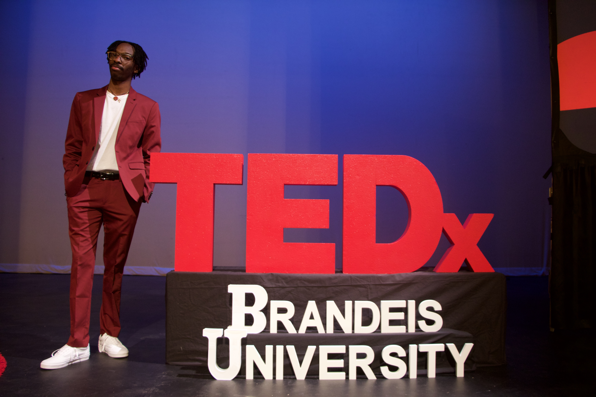

TEDxBrandeisUniversity
"Loc'd and Coded: The Politics of Dreadlocks"
For 1 year, 7 months, and 28 days (and counting), I’ve been growing out my dreadlocks*. For me, it’s served as my connection to my Jamaican heritage, but also my mom. But there have been many people, including my parents, who insisted that I cut my hair if I ever wanted a meaningful job in corporate America. So throughout my dreadlock journey I’ve been forced to face the question: “my hair or a job?” Why am I forced to choose?
On April 4, 2019, I spoke at TEDxBrandeisUniversity 2019: Past Perspectives, Future Minds on my dreadlock journey and respectability politics.
Watch the promo video here while the official video is being edited.